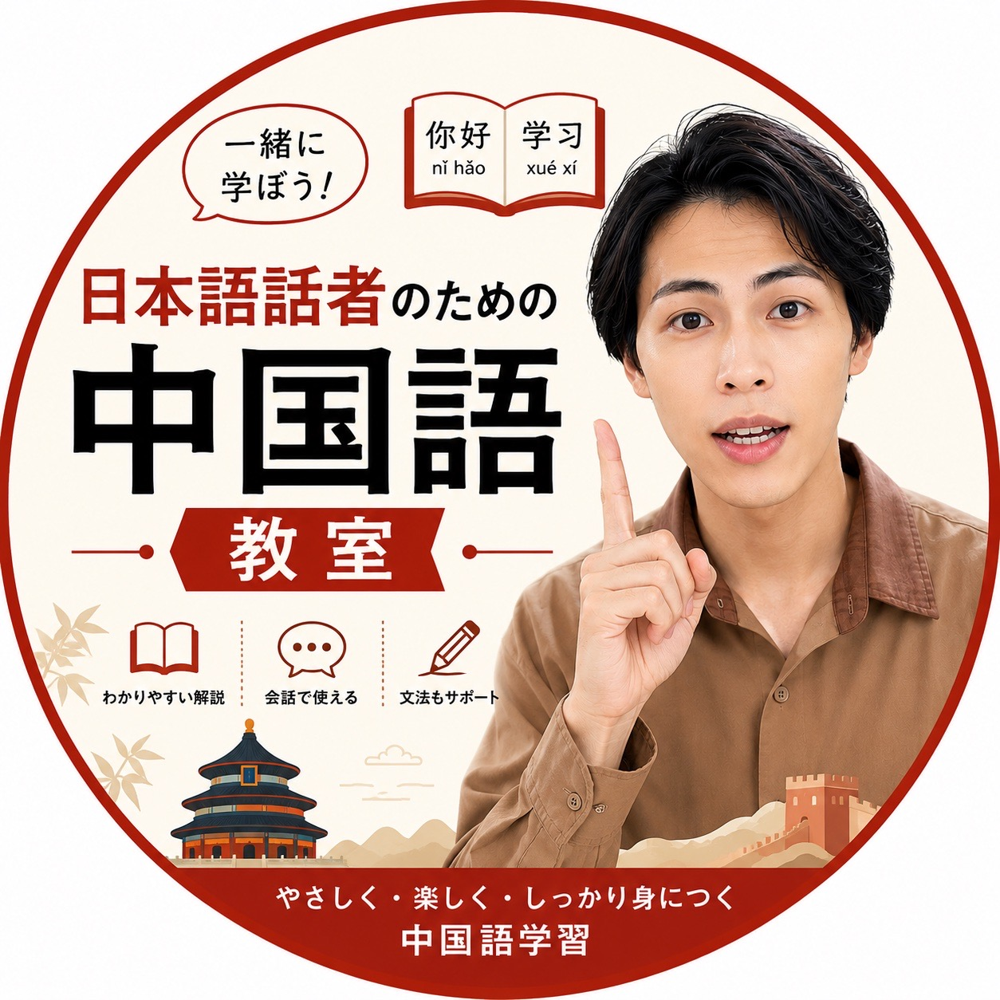

「雨が止んだ」
中国語では「雨＋止む」ではなく、動詞を先に置いて言います。
自然な言い方雨停了yǔ tíng le
日本語をそのまま置き換えると、少し不自然になることがあります。ことばの違いを手がかりに、伝わる中国語を一緒に見つけていきましょう。

日本語と中国語は、似ているところも違うところもあります。短い例文で、使い分けの感覚をつかみましょう。
中国語では「雨＋止む」ではなく、動詞を先に置いて言います。
自然な言い方経験を伝えるときは「了」ではなく「过」を使う形があります。
経験を表す丁寧にお願いしたいとき、会話でそのまま使えるひとこと。
会話で使える日本語の意味から、中国語で自然な言い方を選んでみましょう。答えを選ぶと、ポイントが表示されます。
「雨がもう止んだ」と伝えるときの表現を選んでください。
丸暗記だけに頼らず、日本語話者がつまずきやすいポイントを一つずつ整理します。
日本語では自然でも、中国語では別の形になる。語順や言葉の選び方を比べて、理由を見つけます。
例文を使って、文法をやさしく整理。文の形と意味がどうつながるかを理解します。
学んだ表現を、短い会話や身近な場面で使ってみます。伝わった実感を次の学びへ。
この教室は、日本語を母語とする方が中国語を学ぶための場所です。似ている漢字に安心したり、日本語の言い方をそのまま当てはめたりするところから、学びのヒントを見つけます。
初心者の方にも、学び直したい方にも。むずかしい言葉をできるだけ使わず、例文と会話を通して一歩ずつ進みます。
今日のミニレッスンで、中国語の見え方を少し変えてみませんか。